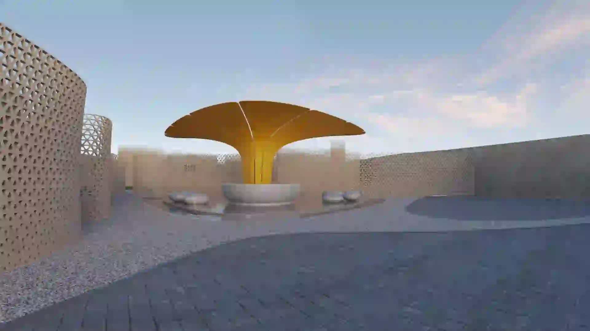
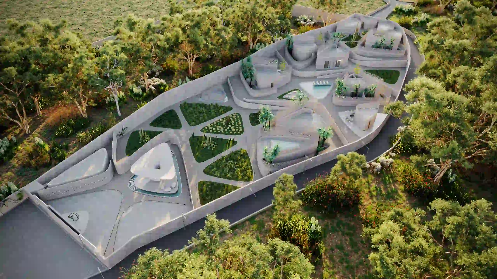
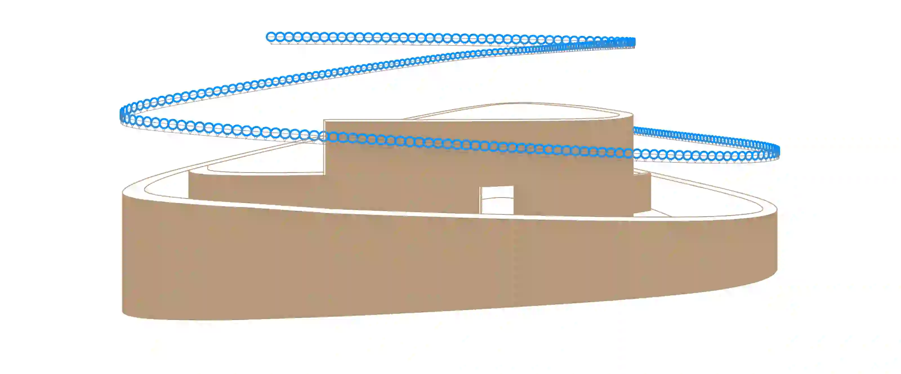
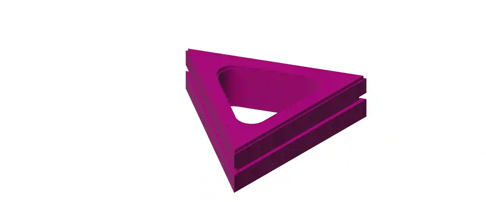
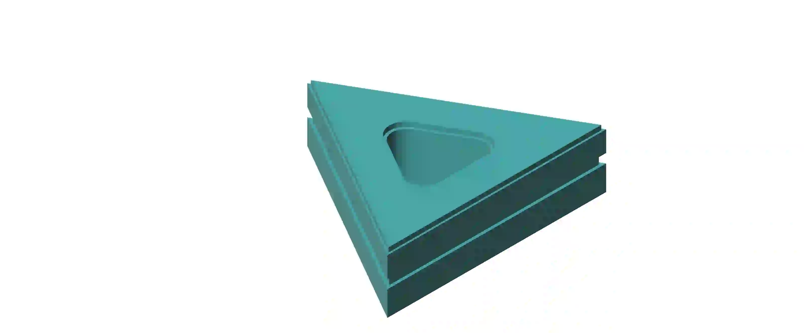
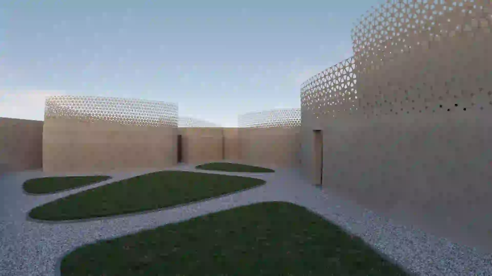

Studio Symbiosis · Udaipur, Rajasthan
The Dunes
A resort landscape assembled through computational geometry, deep shade and a family of buildable masonry components.

- Office
- Studio Symbiosis
- Location
- Udaipur, Rajasthan, India
- Programme
- Resort, villas and shared amenities
- Contribution
- Computational façade and construction coordination
01 / Landscape as plan
The Dunes is organised as a porous field of villas and shared spaces. Curved walls establish enclosures, routes and garden courts while allowing the landscape to remain the dominant spatial framework.
The masterplan sets the rhythm of arrival, shade, water and planting across the site.

02 / Geometry to enclosure
Rhino and Grasshopper were used as coordination tools rather than image-making tools. The digital surface establishes a controlled reference for the curved walls, the perforated screen and the setting-out logic required to translate them into construction.
By working from a consistent geometric model, the façade can be adjusted without losing the relationship between component, wall thickness, openings and landscape edge.

03 / Component family
The façade is resolved through a finite family of triangular masonry components. Their repetition produces a dense-to-open gradient: the envelope can retain privacy and mass where needed while opening toward light, air and long views.
This keeps the visual richness of the screen tied to a legible construction system rather than to a unique piece at every location.


04 / Shade, water, inhabitation
The completed atmosphere relies on environmental performance as much as form. Perforated walls temper direct sun, planted courts soften the ground plane, and shaded pools and terraces turn circulation into a sequence of habitable outdoor rooms.

Architectural project: Studio Symbiosis. Project imagery and documentation supplied with the portfolio material.